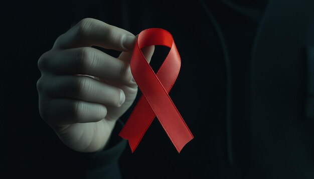

Mengenal Lenacapavir, Obat Baru yang Jadi Solusi bagi Pasien HIV
Obat lenacapavir memiliki potensi besar dalam mengobati HIV, utamanya karena kemampuannya untuk mengurangi penyebaran virus HIV.

Makanan Apa yang Harus Dihindari Penderita HIV?
HIV telah menjadi kondisi kronis yang dapat ditangani. Oleh karena itu, mengembangkan pola makan dan praktik gizi yang lebih sehat.

7 Fakta dan Mitos Seputar HIV/AIDS
Peringatan hari AIDS sedunia bertujuan untuk menguatkan penderita sekaligus mengedukasi masyarakat tentang bahaya AIDS. Simak mitos dan fakta seputar AIDS di sini.

Apa itu HIV AIDS? Gejala, Penyebab, dan Pengobatan
Butuh informasi HIV AIDS untuk orang tersayang kamu? Baca gejala, penyebab & pengobatan HIV AIDS